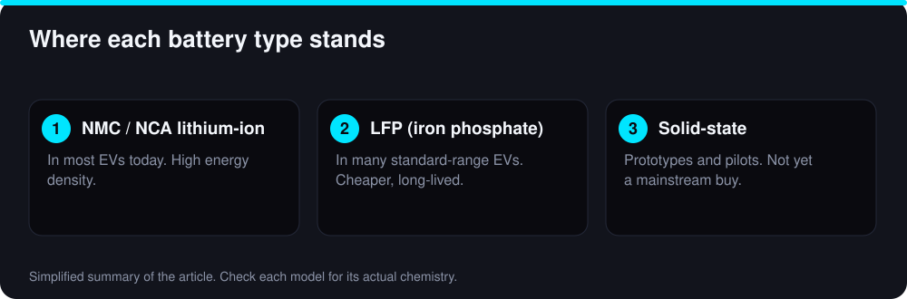
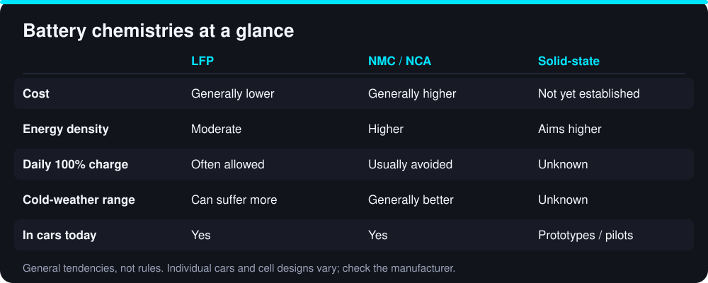

Every few months a headline promises that solid-state batteries will make electric cars cheaper, lighter, faster to charge and almost impossible to set on fire. It is a genuinely exciting technology — but as of September 2026 it is still mostly a story about prototypes, pilot lines and carefully worded timelines. Here is what is real, what is marketing, and what it means if you are shopping for an EV today.
What is a solid-state battery?
A conventional lithium-ion cell moves lithium ions between two electrodes through a liquid electrolyte. A solid-state cell replaces that liquid with a solid material such as a ceramic, sulfide or polymer. In theory, a solid electrolyte lets engineers use a lithium-metal anode, which can store more energy in the same space, and removes the flammable liquid that makes thermal-runaway fires possible.
- →Potential upside: higher energy density (more range for the same weight), faster charging and improved safety margins.
- →Potential downside: hard manufacturing, uncertain cost and lifespan in real-world use.
Where the technology actually stands
Several automakers and battery companies — including Toyota, Nissan, Honda, BMW, Mercedes-Benz, Hyundai, Stellantis, Samsung SDI, CATL, QuantumScape and Solid Power — have publicly described solid-state programs, pilot production or road-test fleets. Public timelines mostly point to limited-volume vehicles in the late 2020s, with broader adoption after that. Treat every date as a target rather than a promise; these schedules have slipped before.
It is also important to separate all-solid-state from semi-solid-state batteries. Some manufacturers, mainly in China, already sell vehicles with cells they call semi-solid-state, which still contain some liquid or gel. They can be a real improvement, but they are not the same thing as the fully solid cell the headlines describe. We are not aware of an all-solid-state battery in a mass-market car that you can buy today; always confirm with the manufacturer.

Why is it so hard?
- →Interfaces: solid layers must stay in tight contact as the cell expands and contracts, or resistance rises and capacity fades.
- →Dendrites: thin lithium spikes can still grow through some solid electrolytes and short-circuit a cell.
- →Manufacturing: making defect-free solid layers at the scale of millions of cells is very different from making lab samples.
- →Cost: materials and new factory equipment must come down close to today's lithium-ion cost per kWh to matter for mainstream cars.
The batteries you can buy today
Today's improvements come from incremental chemistry and design changes. Lithium iron phosphate (LFP) cells are cheaper, tolerate frequent 100% charging and last for many cycles, at the cost of somewhat lower energy density — which is why they are increasingly used in standard-range models. Nickel-based chemistries (NMC and NCA) pack more energy for long-range versions. Sodium-ion cells are emerging in small volumes and may suit low-cost cars. Better cooling, cell-to-pack designs and software also add real range and charging speed without waiting for a new chemistry.
Cells, modules and packs: what is inside the battery
The word “battery” in an EV really means a pack made of many parts. The smallest unit is the cell, which stores the energy. Cells are grouped into modules or, in newer designs, placed directly into the pack in a cell-to-pack layout that saves space and weight. A battery management system watches voltage, current and temperature across the pack, balances the cells, and limits charging or power when conditions are unsafe. A cooling and heating system keeps the pack in its comfortable temperature range.
This matters when you read battery news. A better cell does not automatically mean a better car: pack design, cooling, software and cost decide how much of the cell’s promise reaches the driver. It also explains why two cars with the same chemistry can charge and age differently.
LFP, NMC and the others, compared
Today’s mainstream choice comes down to a few chemistries. Lithium iron phosphate (LFP) uses no nickel or cobalt, tends to cost less, and is commonly rated for frequent full charges and many cycles. Its trade-offs are lower energy density and, in some designs, weaker performance in the cold. Nickel-manganese-cobalt (NMC) and nickel-cobalt-aluminum (NCA) cells hold more energy for their weight, which suits long-range versions, but manufacturers usually advise limiting everyday charging to a lower level. Sodium-ion cells use cheap, abundant materials and are starting to appear in small volumes, though their energy density is currently lower than lithium-ion.

Neither choice is universally better. If you do mostly city and commuter driving with home charging, LFP’s lower cost and tolerance for full charges are attractive. If you take long trips in cold climates, a nickel-based pack may suit you better. The right question is not “which chemistry wins” but “which one fits how I drive,” and the trim level’s specification sheet usually tells you which cell type you are getting.
Fast charging and battery life
Fast charging is safe when the car manages it, but heat and high currents are hard on any battery. Cars protect themselves by slowing the charge rate when the pack is too hot, too cold or nearly full. Many models can precondition the battery on the way to a fast charger so that it arrives at the right temperature, which can shorten the stop noticeably. Using fast chargers on road trips is normal; relying on them for every charge may age the pack somewhat faster than slower home charging. For a deeper look, read our guide to EV battery degradation.
Recycling and second life
A battery that is no longer suitable for a car is not necessarily finished. Packs that still hold a large share of their capacity can be reused in stationary storage, for example to back up a building or store solar energy. At the end of that second life, recyclers can recover valuable materials such as nickel, cobalt, copper and, depending on the process, lithium. Recycling capacity is still expanding and the economics differ by chemistry, since LFP contains fewer high-value metals. Ask a manufacturer what take-back or recycling program it offers; it is a reasonable question to put to any seller of EVs.
Should you wait for solid-state?
For most buyers, no. If an EV fits your driving today, waiting years for a technology that may debut in expensive low-volume models means paying more to use gas longer. Instead, judge the battery you are actually buying:
- →Check the warranty — many EVs carry roughly 8 years or 100,000 miles on the battery, but terms differ, so read them.
- →Compare real-world range (EPA rating and independent winter tests), not just the headline number.
- →Look at charging speed: the time from 10% to 80% matters more than peak kW.
- →Ask which chemistry the trim uses and what the manufacturer recommends for daily charge limits.
How to read a battery breakthrough headline
- →Is it a lab cell, a pilot line or a car you can order?
- →Are the numbers for a single cell or a whole pack? Pack values are always lower.
- →Does it quote cycle life and cost per kWh, or only energy density?
- →Is the date a firm production start or a "target"?
📌 Key Takeaway
Solid-state batteries are promising but not yet a reason to delay a purchase. Buy the EV that fits your needs now, and let the technology arrive gradually in future models.
Frequently Asked Questions
A cell is the basic unit that stores energy. A pack combines many cells with cooling, wiring, structural protection and a battery management system. Cell-level improvements only help the driver if the pack design supports them.
Most EV batteries are designed to last many years and are covered by a warranty that is commonly around 8 years or 100,000 miles, though terms vary. Real-world capacity loss depends on climate, charging habits and mileage. See our battery degradation guide for details.
Often yes. Packs with remaining capacity can be used for stationary energy storage, and when they are fully worn out their materials can be recycled. Availability depends on the manufacturer and on local recycling facilities.
Not as a mass-market, all-solid-state product as far as we know. A few manufacturers sell cars with semi-solid-state cells, and many companies run pilot programs. Check the manufacturer's specifications for the exact model.
Possibly in the long run, but early versions are expected to be costly. Price parity with lithium-ion depends on manufacturing scale.
Yes. Modern lithium-ion packs include cooling, monitoring and cell-level protection, and EV fires are rare relative to the number of vehicles on the road. Follow the manufacturer's charging guidance.
Neither is universally better. LFP favors cost and longevity; NMC favors range and cold-weather performance. Choose based on how you drive.
Bilal Ahmad Alvi
CEO, FutureAutoLab
Written and reviewed by Bilal Ahmad Alvi, CEO of FutureAutoLab, following our editorial policy. Spot an error? Tell us and we will correct it.